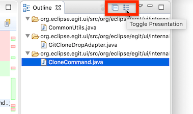
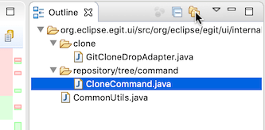
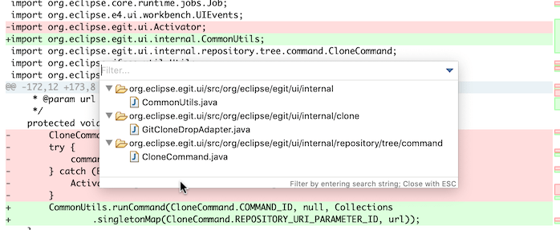
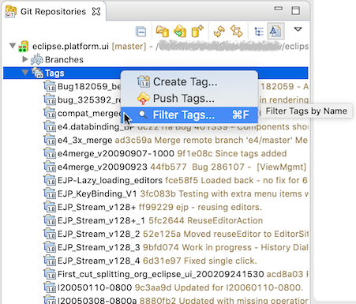
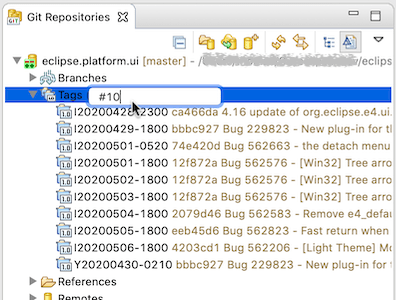
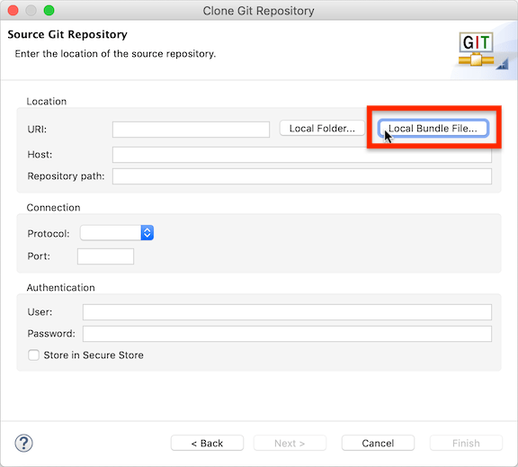

| EGit 5.8 New and Noteworthy | ||
|---|---|---|
|
|
||
| Contributors | ||
The outline view of the diff viewer has now a toolbar:

There's a button to collapse all folders, and a button to toggle the presentation from a flat folder list to a hierarchical display.

When clicked, the content is shown using nested folders.
Additionally, the diff viewer now also has a "quick outline" that can be opened with the standard keybinding Ctrl/Cmd-O.

In the Git Repositories view, there is a new command on the "Tags" node to filter the tags.

It opens a text box where the user can enter a filter expression to restrict which tags will be shown:

A filter expression can be either of
If the user hits <return>, the filter pattern is saved. The filter is persisted and will be re-applied when Eclipse is re-started. Different repositories can have different tag filters. A filter can be removed by clearing its filter expression: all tags will be shown again.
<ESC> cancels the filter change.

EGit 5.8.0 supports cloning from a local git bundle file. There is a new button in the "Clone" wizard to open a file selection dialog to select the bundle file to clone from.
The command that opens the "Clone" wizard shown above is registered in the Eclipse platform with ID org.eclipse.egit.ui.RepositoriesViewClone. This command newly accepts an optional
command parameter named repositoryUri. The value is supposed to be a string containing a git clone URI. If set and the value can indeed be parsed as a git clone URI, it is used to pre-fill the dialog with the values from that URI. If repositoryUri is not set or contains an invalid value it is silently ignored.
EGit 5.8 includes lots of less noticeable improvements in the UI, plus a number of bug fixes. The complete list of new features and bug fixes is available in the release notes.
|
|
||
| Contributors |